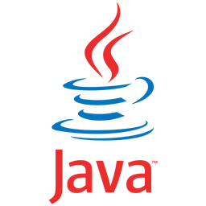
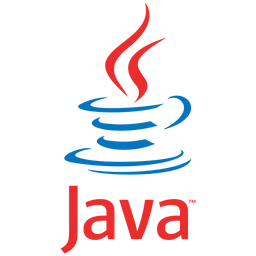
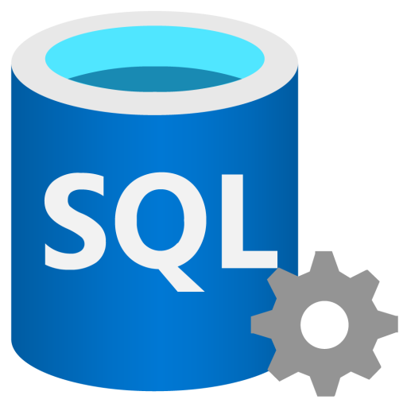
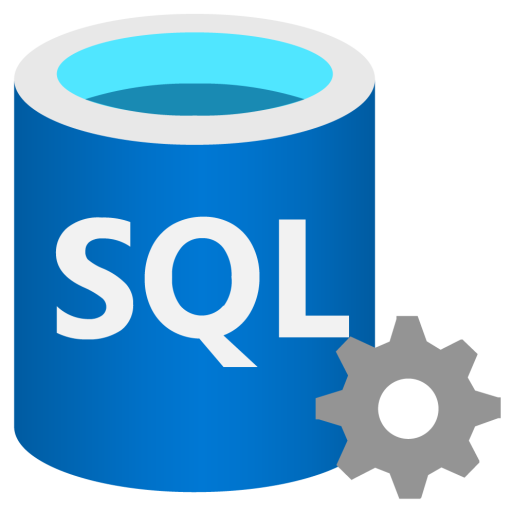
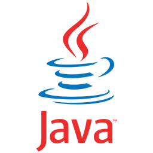
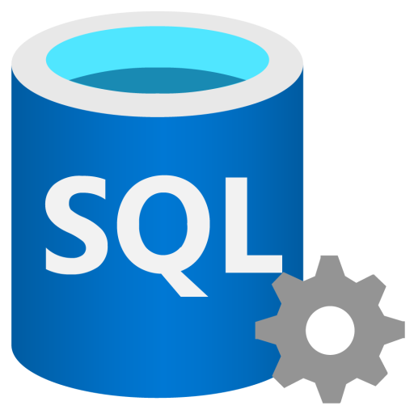

Skills
Here are some of the programming languages and technologies I specialize in, showcasing my expertise in building dynamic and efficient solutions.


 

 


A three-tier distributed web application with role-based access control, demonstrating enterprise-level architecture using Java Servlets, JSP, and MySQL.
A comprehensive database management application built with Java and MySQL for efficient data handling and user management.
A data analytics tool built with Python for processing and visualizing large datasets with interactive charts and reports.
Here are some of the programming languages and technologies I specialize in, showcasing my expertise in building dynamic and efficient solutions.

